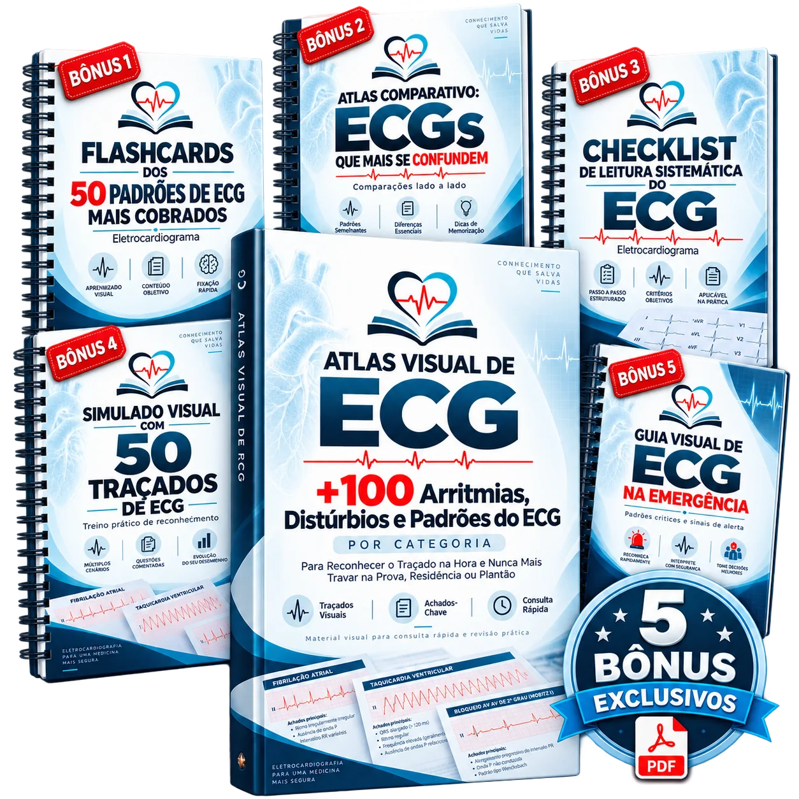

⭐ MATERIAL PRINCIPAL

+100 Arritmias, Distúrbios e Padrões do ECG
O guia visual definitivo e completo, cobrindo arritmias, bloqueios, alterações isquêmicas e distúrbios eletrolíticos em traçados organizados por categoria.
ABRIR MATERIAL PRINCIPAL (PDF) →